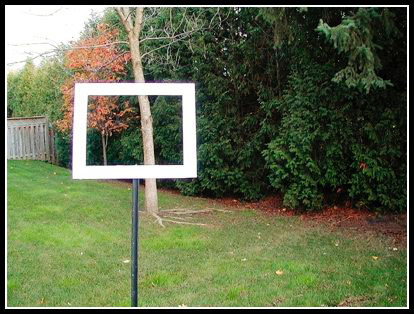

|
Composition in the Field for the Art PhotographerVersion 1.1, Page 2, ©2001 by Dale Cotton, all rights reserved Who Is Your Audience? What is Your Goal?When you go out on a shoot a bit of planning is involved. You think about your location and then make a best guess as to which lenses to bring, whether you will need sun screen or insect repellent, etc. Here's two more decisions you should very consciously make before each shoot: who will be your target audience(s) for any pictures you come back with? and what do they want to see? It so happens that for me the answer the first question is simple and nearly always the same: myself. One of the up-sides of holding down a day job is that I don't have to make money from my images, so I am free to please only myself. This means I can leave home a whole lot of extra baggage. I don't have any ego invested in the outcome, plus I don't have to try to see the world through a stranger's eyes. Your goals may be very different. For example, you may be a member of a regional camera club; and consequently you may always have an eye to first prize in the annual show and judging. In that case your aesthetic decisions will be determined not solely by what pleases you, but additionally by what you think will wow the judges. Or, you may have a specific project in mind - an image to be framed and given as a birthday present to Great Aunt Estelle, scenes for a nature club's newsletters, etc. One of the primary issues that will be determined by your target audience is how constrained you will be by the requirements of eye candy production. When Paul McCartney sits down to write a piece of music, his mental approach is likely going to be very different if his goal is a pop hit single or a symphony. Who and What determine Where and When Leveraging your Intended Use Figure 2. Framing a Scene (hypothetical approach!) Let's say that today you are like me - out only to please yourself. When a fisher-person goes out with fly rod and tackle box, her goal may be to either bring home a trophy or to bring home supper. When I go out my goal is to bring home an image that I'll be so excited with that I'll print it as large as possible, frame it, then hang it front and centre on my living room wall. Because this is my goal, my ideal approach would be to take an 18" by 24" empty frame out with me. When a vista catches my eye, I would then hold the frame up in front of the vista, moving it farther or closer from my eyes, to see if the rectangle so captured shows promise for my living room wall. (But to get farther from the frame than arm's length, it would have to come attached to a stake.) If I were planning to make Christmas cards to send out this year, I could bring a mock Christmas card with the hole cut out where the picture would be, then hold that up to the scene. Having framed the scene exactly as I want it, I then set up my tripod and camera at that spot, point it in the correct direction from the correct eye-height, then change focal length as necessary to achieve the same framing of the same scene. |
| - 2 - |